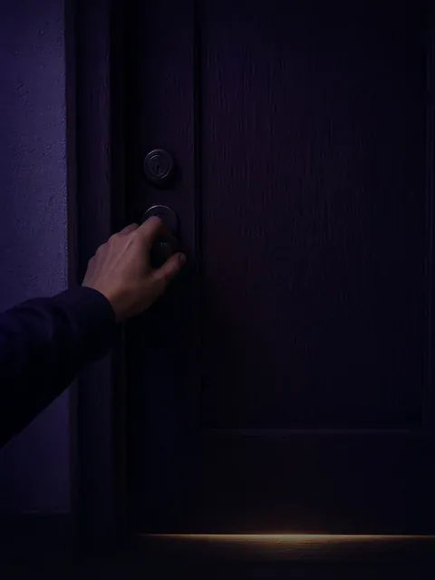
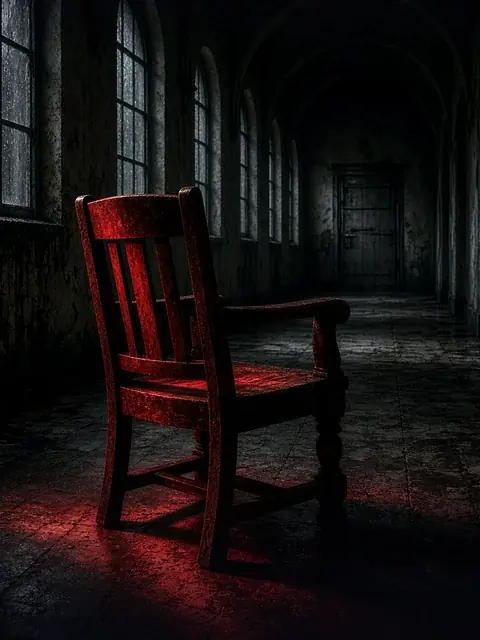
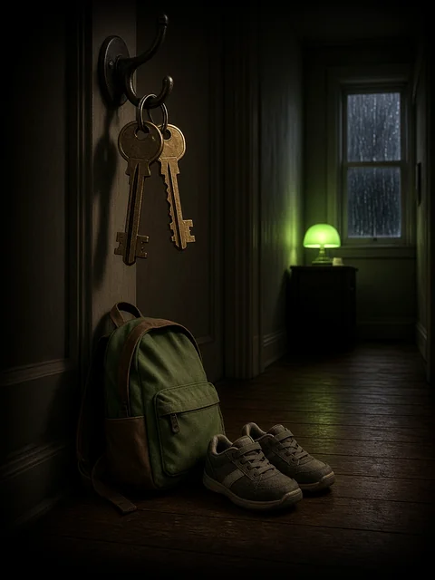
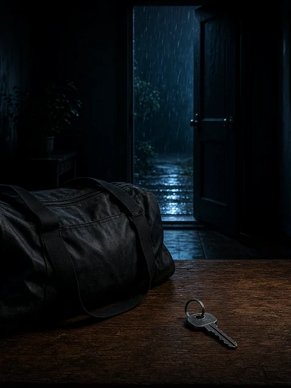
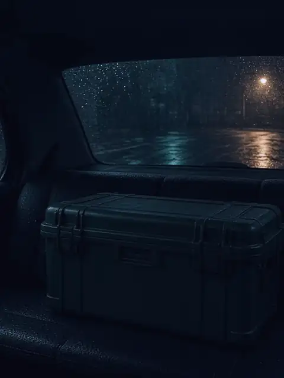

Caminho 01 Atendimento
Recebi uma medida protetiva
Intimação, restrições de contato e distância, filhos, casa e as primeiras providências e o que a decisão exige.
Atravesse o rio. Cada pergaminho guarda um assunto.
Lucas Brito Ladeia · OAB/MA 16.091
Ninguém chega aqui por escolha: uma intimação, uma medida protetiva, uma acusação, o fim de um casamento. O que tenho de mais valioso para oferecer é o que dez anos de advocacia me ensinaram, o que a lei diz e os cuidados antes de decidir, reunido para que você entenda em minutos o que a mim custou anos.
Liberdade · Família · Patrimônio
Conteúdo informativo. Não substitui a análise individual de cada caso.
Qual é a sua situação?
Para lerO acervo de leitura da Rede, com 38 textos: o que fazer, passo a passo, em cada situação. Organizada pelo que aconteceu com você. Leitura livre, sem cadastro.
 ArtigoTenho os prints da conversa. Isso vale como prova?O print pode valer como prova, mas raramente se sustenta sozinho…O print pode valer como prova, mas raramente se sustenta sozinho. Veja o que a lei diz sobre a imagem de tela, a ata notarial e o código hash, e o que preservar desde já.
ArtigoTenho os prints da conversa. Isso vale como prova?O print pode valer como prova, mas raramente se sustenta sozinho…O print pode valer como prova, mas raramente se sustenta sozinho. Veja o que a lei diz sobre a imagem de tela, a ata notarial e o código hash, e o que preservar desde já.  ArtigoEla apagou as mensagens. E agora?Mensagem apagada não significa prova perdida…Mensagem apagada não significa prova perdida. Veja por que preservar é sempre o lance mais seguro, o que o Marco Civil diz sobre os registros e o que não fazer.
ArtigoEla apagou as mensagens. E agora?Mensagem apagada não significa prova perdida…Mensagem apagada não significa prova perdida. Veja por que preservar é sempre o lance mais seguro, o que o Marco Civil diz sobre os registros e o que não fazer.  ArtigoExiste audiência para discutir uma medida protetiva? O que acontece nela?A medida pode ser concedida sem audiência…A medida pode ser concedida sem audiência. Veja quando o juiz costuma ouvir as partes, a audiência de retratação da representação, como se preparar e por que não é preciso esperar audiência para se manifestar.
ArtigoExiste audiência para discutir uma medida protetiva? O que acontece nela?A medida pode ser concedida sem audiência…A medida pode ser concedida sem audiência. Veja quando o juiz costuma ouvir as partes, a audiência de retratação da representação, como se preparar e por que não é preciso esperar audiência para se manifestar.  ArtigoComo contestar uma medida protetiva? Existe prazo para apresentar minha defesa?A Lei Maria da Penha não fixa um prazo próprio: vale o que está na…A Lei Maria da Penha não fixa um prazo próprio: vale o que está na sua decisão. Como contar o prazo, a diferença entre manifestação e recurso e o que uma defesa costuma conter.
ArtigoComo contestar uma medida protetiva? Existe prazo para apresentar minha defesa?A Lei Maria da Penha não fixa um prazo próprio: vale o que está na…A Lei Maria da Penha não fixa um prazo próprio: vale o que está na sua decisão. Como contar o prazo, a diferença entre manifestação e recurso e o que uma defesa costuma conter. 
ArtigoFui ameaçada hoje: como pedir uma medida protetiva e em quanto tempo o juiz decide?Onde pedir, sem advogado e sem boletim de ocorrência como condição,…Onde pedir, sem advogado e sem boletim de ocorrência como condição, o que levar, o que pode ser pedido e os prazos de 48 horas previstos na Lei Maria da Penha. ArtigoPosso apresentar provas depois que a medida protetiva já foi concedida?Sim: a defesa vem depois da decisão urgente…Sim: a defesa vem depois da decisão urgente. Que provas costumam ajudar, o que pode contaminá-las e por que a demora pesa, mesmo sem tirar o direito de provar.
ArtigoPosso apresentar provas depois que a medida protetiva já foi concedida?Sim: a defesa vem depois da decisão urgente…Sim: a defesa vem depois da decisão urgente. Que provas costumam ajudar, o que pode contaminá-las e por que a demora pesa, mesmo sem tirar o direito de provar.  ArtigoComo pedir a revogação ou a revisão de uma medida protetiva? O que precisa ser demonstrado?A medida vale enquanto houver risco…A medida vale enquanto houver risco. O pedido de revogação ou de ajuste parcial gira em torno disso: o que mudou, como provar e o que nunca fazer enquanto o juiz não decide.
ArtigoComo pedir a revogação ou a revisão de uma medida protetiva? O que precisa ser demonstrado?A medida vale enquanto houver risco…A medida vale enquanto houver risco. O pedido de revogação ou de ajuste parcial gira em torno disso: o que mudou, como provar e o que nunca fazer enquanto o juiz não decide.  ArtigoDescumpri a medida protetiva. O que pode acontecer?E se foi ela quem procurou o contato…O que diz o art. 24-A da Lei Maria da Penha, o que acontece quando a própria pessoa protegida procura o contato e quais cuidados práticos fazem diferença depois de um descumprimento.
ArtigoDescumpri a medida protetiva. O que pode acontecer?E se foi ela quem procurou o contato…O que diz o art. 24-A da Lei Maria da Penha, o que acontece quando a própria pessoa protegida procura o contato e quais cuidados práticos fazem diferença depois de um descumprimento.  ArtigoEla pediu medida protetiva. E agora, posso ver meus filhos?E o aniversário do seu filho, no mês que vem…Quando a medida protetiva alcança os filhos, o que acontece com a convivência e a guarda, e como pedir ao juiz que regule as visitas.
ArtigoEla pediu medida protetiva. E agora, posso ver meus filhos?E o aniversário do seu filho, no mês que vem…Quando a medida protetiva alcança os filhos, o que acontece com a convivência e a guarda, e como pedir ao juiz que regule as visitas.  ArtigoEla chegou onde eu estava. Tenho que ir embora?O que acontece se você ficar no local…Chegar primeiro não protege ninguém. O que conta é o que você faz depois de perceber a presença dela.
ArtigoEla chegou onde eu estava. Tenho que ir embora?O que acontece se você ficar no local…Chegar primeiro não protege ninguém. O que conta é o que você faz depois de perceber a presença dela.  ArtigoQuem sabe o quê, e quando: o tempo de apresentar a provaInformação assimétrica, resposta à acusação e juntada de documentos:…Informação assimétrica, resposta à acusação e juntada de documentos: o lance certo depende de saber o que cada lado já sabe, e de jogar sempre dentro da lei.
ArtigoQuem sabe o quê, e quando: o tempo de apresentar a provaInformação assimétrica, resposta à acusação e juntada de documentos:…Informação assimétrica, resposta à acusação e juntada de documentos: o lance certo depende de saber o que cada lado já sabe, e de jogar sempre dentro da lei.  ArtigoCadeia de custódia: o compromisso que se pode conferirUm compromisso só é crível quando pode ser verificado…Um compromisso só é crível quando pode ser verificado. A cadeia de custódia é o compromisso do Estado de mostrar o caminho de cada vestígio, e a defesa tem o direito de conferir cada passo, inclusive na prova digital.
ArtigoCadeia de custódia: o compromisso que se pode conferirUm compromisso só é crível quando pode ser verificado…Um compromisso só é crível quando pode ser verificado. A cadeia de custódia é o compromisso do Estado de mostrar o caminho de cada vestígio, e a defesa tem o direito de conferir cada passo, inclusive na prova digital.  ArtigoPerfil falso ou conversa forjada: quando entra a perícia?Quando aparece uma conversa que você não escreveu, a autenticidade…Quando aparece uma conversa que você não escreveu, a autenticidade passa a ser o centro da discussão. Veja quem precisa provar, como se argui a falsidade, como funciona a perícia e o que preservar.
ArtigoPerfil falso ou conversa forjada: quando entra a perícia?Quando aparece uma conversa que você não escreveu, a autenticidade…Quando aparece uma conversa que você não escreveu, a autenticidade passa a ser o centro da discussão. Veja quem precisa provar, como se argui a falsidade, como funciona a perícia e o que preservar. 
ArtigoPosso ser preso preventivamente mesmo sem ter sido condenado?A preventiva não é pena antecipada…A preventiva não é pena antecipada. Entenda os fundamentos e as hipóteses da lei, a exigência de fatos concretos, as medidas alternativas, a revisão a cada 90 dias e como questionar a prisão. ArtigoRecebi um mandado de busca e apreensão. O que a polícia pode fazer dentro da minha casa?Com mandado, a polícia pode entrar de dia e apreender o que se…Com mandado, a polícia pode entrar de dia e apreender o que se relaciona ao fato. Veja o que o mandado deve conter, como a busca deve ser feita, seus direitos durante a diligência e o que evitar.
ArtigoRecebi um mandado de busca e apreensão. O que a polícia pode fazer dentro da minha casa?Com mandado, a polícia pode entrar de dia e apreender o que se…Com mandado, a polícia pode entrar de dia e apreender o que se relaciona ao fato. Veja o que o mandado deve conter, como a busca deve ser feita, seus direitos durante a diligência e o que evitar.  ArtigoFui intimado da medida e mandei mensagem. E agora?Uma mensagem sem ameaça também conta…Uma mensagem sem ameaça, enviada depois da intimação, pode configurar o crime do art. 24-A da Lei Maria da Penha. Entenda o que a lei diz e o que fazer.
ArtigoFui intimado da medida e mandei mensagem. E agora?Uma mensagem sem ameaça também conta…Uma mensagem sem ameaça, enviada depois da intimação, pode configurar o crime do art. 24-A da Lei Maria da Penha. Entenda o que a lei diz e o que fazer.  ArtigoFui intimado a depor. Sou obrigado a ir? Posso ficar calado?Testemunha ou investigado? A intimação nem sempre diz…Testemunha ou investigado: o que muda, quando é possível ficar em silêncio e por que ir com advogado.
ArtigoFui intimado a depor. Sou obrigado a ir? Posso ficar calado?Testemunha ou investigado? A intimação nem sempre diz…Testemunha ou investigado: o que muda, quando é possível ficar em silêncio e por que ir com advogado.  ArtigoFui acusado de algo que não fiz. O que faço antes de depor?Ligar para quem acusou parece resolver…Direito ao silêncio, acesso aos autos, preservação de provas e o que não fazer com quem acusou, antes do depoimento na delegacia.
ArtigoFui acusado de algo que não fiz. O que faço antes de depor?Ligar para quem acusou parece resolver…Direito ao silêncio, acesso aos autos, preservação de provas e o que não fazer com quem acusou, antes do depoimento na delegacia.  ArtigoMeu ex ficou com a casa depois da separação. Posso pedir aluguel pelo uso exclusivo?Quem usa sozinho um imóvel comum pode ter de compensar o outro…Quem usa sozinho um imóvel comum pode ter de compensar o outro. Veja quando cabe, o que pesa na análise, como ficam filhos e despesas e os caminhos de acordo, notificação, ação e venda do imóvel.
ArtigoMeu ex ficou com a casa depois da separação. Posso pedir aluguel pelo uso exclusivo?Quem usa sozinho um imóvel comum pode ter de compensar o outro…Quem usa sozinho um imóvel comum pode ter de compensar o outro. Veja quando cabe, o que pesa na análise, como ficam filhos e despesas e os caminhos de acordo, notificação, ação e venda do imóvel.  ArtigoEle não paga a pensão dos filhos. Como exigir na Justiça?Sem valor fixado, o caminho é a ação de alimentos…Sem valor fixado, o caminho é a ação de alimentos. Com decisão ou acordo, pede-se o cumprimento: rito da prisão, penhora, desconto em folha e protesto. Veja também prescrição e o que evitar.
ArtigoEle não paga a pensão dos filhos. Como exigir na Justiça?Sem valor fixado, o caminho é a ação de alimentos…Sem valor fixado, o caminho é a ação de alimentos. Com decisão ou acordo, pede-se o cumprimento: rito da prisão, penhora, desconto em folha e protesto. Veja também prescrição e o que evitar.  ArtigoMinha ex-companheira não permite que eu veja meu filho. Como exigir o direito de convivência?A convivência é um direito da criança…A convivência é um direito da criança. Veja como pedir a regulamentação ou o cumprimento do acordo, o que a lei prevê quando o contato é dificultado e o que evitar para não prejudicar o filho.
ArtigoMinha ex-companheira não permite que eu veja meu filho. Como exigir o direito de convivência?A convivência é um direito da criança…A convivência é um direito da criança. Veja como pedir a regulamentação ou o cumprimento do acordo, o que a lei prevê quando o contato é dificultado e o que evitar para não prejudicar o filho.  ArtigoAtrasei a pensão: posso ser preso? Em quantos dias?O atraso da pensão pode levar à prisão civil, mas ela não é…O atraso da pensão pode levar à prisão civil, mas ela não é automática: depende de execução pelo rito da prisão, de intimação ou citação e do prazo de 3 dias para pagar, provar que pagou ou justificar.
ArtigoAtrasei a pensão: posso ser preso? Em quantos dias?O atraso da pensão pode levar à prisão civil, mas ela não é…O atraso da pensão pode levar à prisão civil, mas ela não é automática: depende de execução pelo rito da prisão, de intimação ou citação e do prazo de 3 dias para pagar, provar que pagou ou justificar.  ArtigoMeu filho fez 18. Posso parar de pagar a pensão?O que muda no dia em que ele faz 18…A pensão não termina sozinha em nenhuma idade. O que muda na maioridade e qual é o caminho correto para encerrar a obrigação.
ArtigoMeu filho fez 18. Posso parar de pagar a pensão?O que muda no dia em que ele faz 18…A pensão não termina sozinha em nenhuma idade. O que muda na maioridade e qual é o caminho correto para encerrar a obrigação. 
ArtigoA guarda é compartilhada. Ainda preciso pagar pensão?Compartilhada não quer dizer metade…Guarda compartilhada não é metade para cada um e não elimina a pensão. Entenda como as despesas do filho se dividem.
ArtigoTive que sair de casa. Perco a guarda ou o imóvel?A casa continua sendo sua enquanto…O afastamento do lar é provisório. Veja o que acontece com o imóvel, a guarda, as visitas e a pensão.
ArtigoFui abordado transportando arma: guia de tráfego, porte de trânsito e o que pode virar crimeA guia de tráfego comprova o porte de trânsito, não o porte de defesa…A guia de tráfego comprova o porte de trânsito, não o porte de defesa. Veja o que ela autoriza, como a arma deve ir acondicionada e o que a Lei 10.826/2003 diz quando o transporte foge da autorização. ArtigoMinha arma foi furtada, roubada ou extraviada: o que comunicar e em quanto tempo?Furto, roubo ou extravio de arma, acessório ou munição do acervo…Furto, roubo ou extravio de arma, acessório ou munição do acervo deve ser comunicado imediatamente no Sinarm-CAC, com envio do boletim à Polícia Federal em até dez dias úteis, conforme a IN DG/PF 311/2025.
ArtigoMinha arma foi furtada, roubada ou extraviada: o que comunicar e em quanto tempo?Furto, roubo ou extravio de arma, acessório ou munição do acervo…Furto, roubo ou extravio de arma, acessório ou munição do acervo deve ser comunicado imediatamente no Sinarm-CAC, com envio do boletim à Polícia Federal em até dez dias úteis, conforme a IN DG/PF 311/2025.  ArtigoSou CAC e virei investigado. Perco meu CR e minhas armas?O inquérito suspende o CR sozinho…Inquérito e processo não cancelam o CR sozinhos, mas podem levar a suspensão cautelar e cassação na PF. O que dizem o Estatuto, o Decreto 11.615/2023 e a IN DG/PF 311/2025.
ArtigoSou CAC e virei investigado. Perco meu CR e minhas armas?O inquérito suspende o CR sozinho…Inquérito e processo não cancelam o CR sozinhos, mas podem levar a suspensão cautelar e cassação na PF. O que dizem o Estatuto, o Decreto 11.615/2023 e a IN DG/PF 311/2025.  ArtigoSou CAC e recebi medida protetiva. O que acontece com meu acervo?E o acervo que está em casa…Suspensão da posse, apreensão do acervo, cassação do CR e restituição: o que dizem a Lei Maria da Penha, o Decreto 11.615/2023 e a IN DG/PF 311/2025.
ArtigoSou CAC e recebi medida protetiva. O que acontece com meu acervo?E o acervo que está em casa…Suspensão da posse, apreensão do acervo, cassação do CR e restituição: o que dizem a Lei Maria da Penha, o Decreto 11.615/2023 e a IN DG/PF 311/2025.  Conexão · novo
Comece pela emoção que você sente agora.
Medo, raiva, ciúme, vergonha: o que cada uma faz com você e o que fazer.
Entrar na Conexão
Conexão · novo
Comece pela emoção que você sente agora.
Medo, raiva, ciúme, vergonha: o que cada uma faz com você e o que fazer.
Entrar na Conexão
Se a questão é o voo, o atraso ou a mala, o caminho é o Guia do Passageiro.
Para ser atendido
Os artigos acima ajudam a entender. Aqui estão as frentes em que o advogado atende: cada caminho tem uma página que explica como a conversa acontece. Cada caso é analisado individualmente, sem promessa de resultado.
Ver as três etapas em detalhe Prefere explicar direto? Envie uma mensagem
Caminho 01 Atendimento
Intimação, restrições de contato e distância, filhos, casa e as primeiras providências e o que a decisão exige.
Caminho 02 Atendimento
Defesa técnica, sob sigilo. Intimação para depor, acusação, busca e apreensão ou inquérito aberto: o que significa cada momento e como o atendimento é conduzido.

Caminho 03 Atendimento
O que a Lei Maria da Penha prevê sobre posse e porte, entrega ou apreensão de arma, e como organizar a documentação.

Caminho 04 Atendimento
Separação, união estável, convivência com filhos, pensão alimentícia e divisão de bens, com orientação objetiva.
Material para estudar
Conteúdo editorial, separado do atendimento. Guias em e-book sobre medida protetiva, CAC e Direito de Família, escritos para quem está passando pela situação.


Responsável pela Rede de Proteção
Lucas Brito Ladeia, advogado inscrito na OAB/MA sob o nº 16.091, com atuação desde 2016. Atendimento presencial em Imperatriz-MA e online para pessoas em todo o Brasil.
Cada caso é analisado individualmente, com exposição dos riscos e das possibilidades, sem promessa de resultado.
Ver canais de contatoJornada
Três etapas simples. Cada caso é analisado individualmente; ninguém pode garantir resultado.
Você escolhe a área e envia uma mensagem, ou usa a página do problema. Informe o essencial e se há prazo ou audiência.
O advogado analisa a decisão, os documentos disponíveis e as restrições aplicáveis, e explica o que cada ponto significa na prática.
Indicação das providências possíveis, dos riscos relevantes e da forma de contratação, se houver interesse mútuo em seguir.
Dúvidas frequentes


Contato
Indique a área (medida protetiva, criminal, CAC ou família). A triagem pede só o necessário para a primeira orientação.